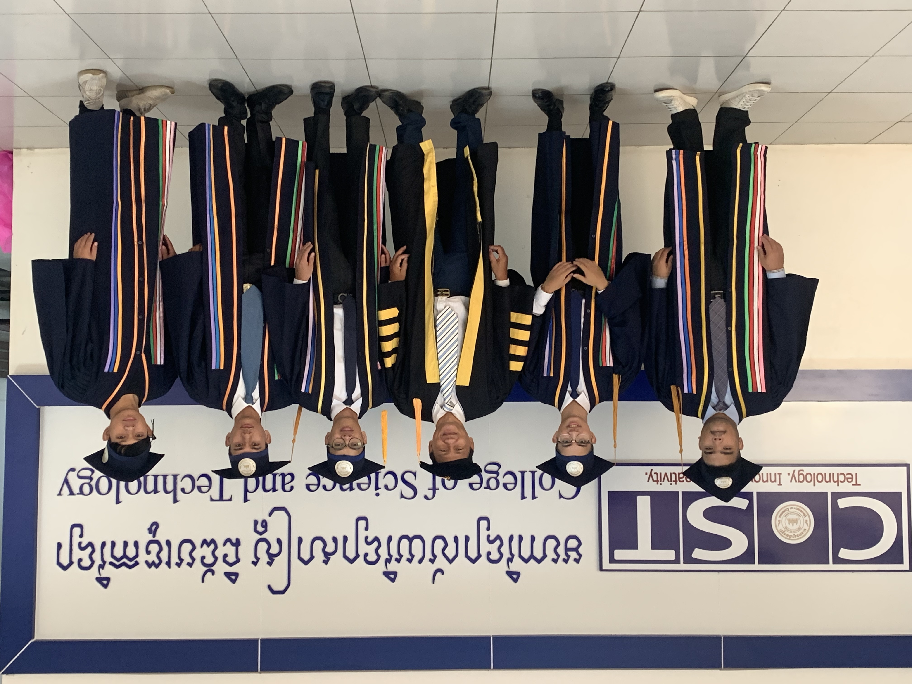
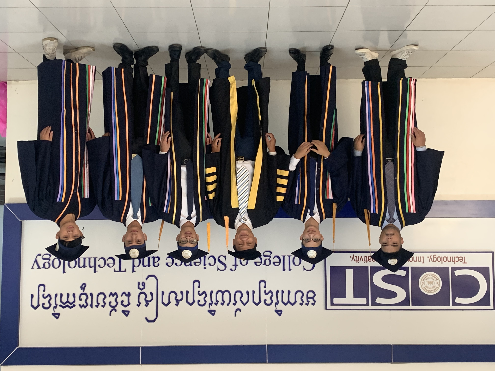

Welcome to College of Science and Technology of The University of Cambodia. For everyone who wishes to pursue for any AA and BA degrees of the study programs, please register now or visit the campus of The University of Cambodia.
Multimedia Laboratory is a classroom where students use devices to listen and speak languages, specifically the English language. Students learning a foreign language can practice sound and word patterns individually or under supervision with the aid of audio equipment, etc. Students can listen, practice and respond to recorded lessons and spoken examples while an instructor monitors their progress. The Language & Multimedia Laboratory is also a place where students can build their word power or vocabulary. There are 57 Dell® computers in this laboratory, fully equipped with headphone, microphone and LCD monitors. Each PC runs Windows 7, Abobe® CS5, Microsoft Office 2010, the Rosetta Stone V2 application, Longman ToEFL test, and various dictionaries such as Orkika.
 

| Multimedia Lab | E-lerning Lab | Networking Lab | IT-Center Lab |
|---|---|---|---|
| Graphic Design | Graphic Design | Networking Design | Computer Application |
| Computer Application | Produce Videos Contents | ||
| Mobile Application |